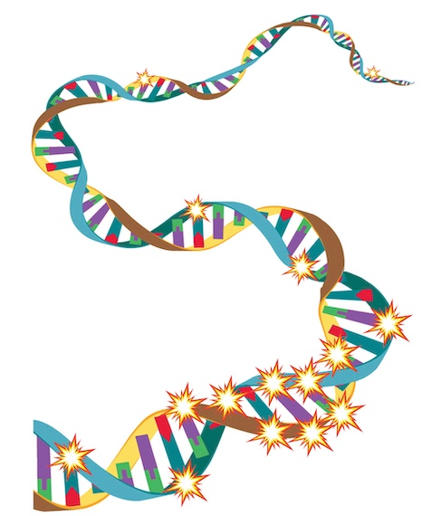
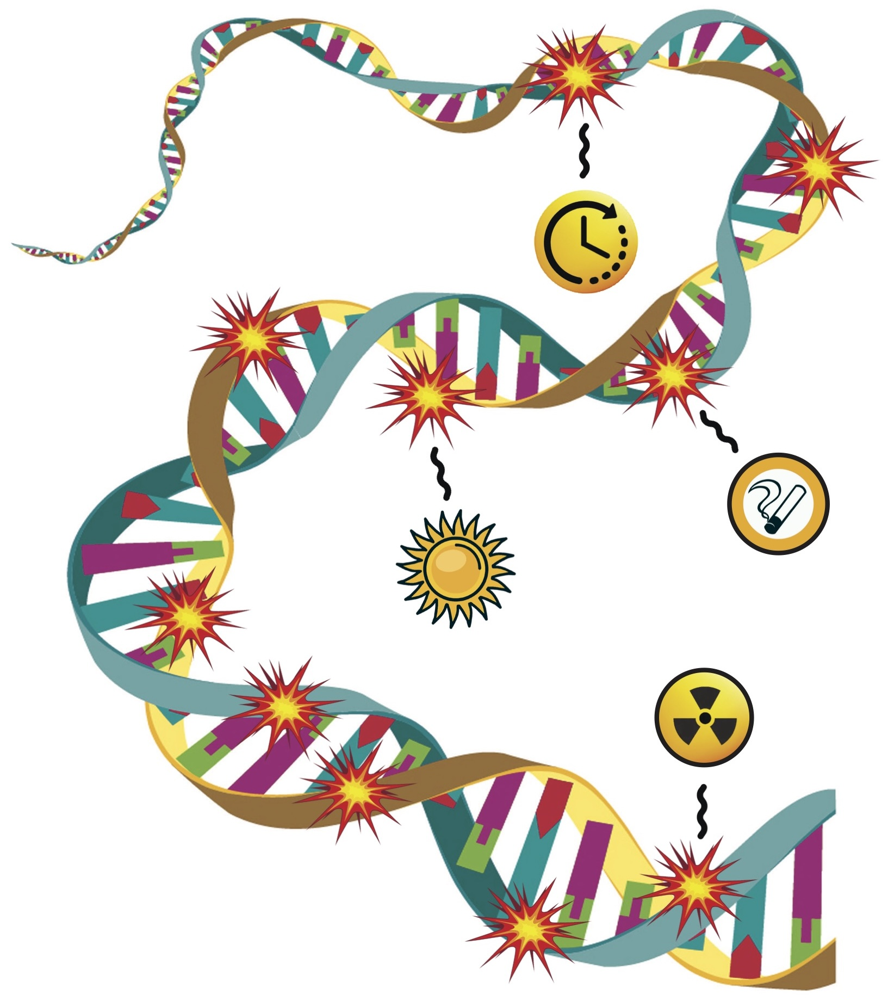
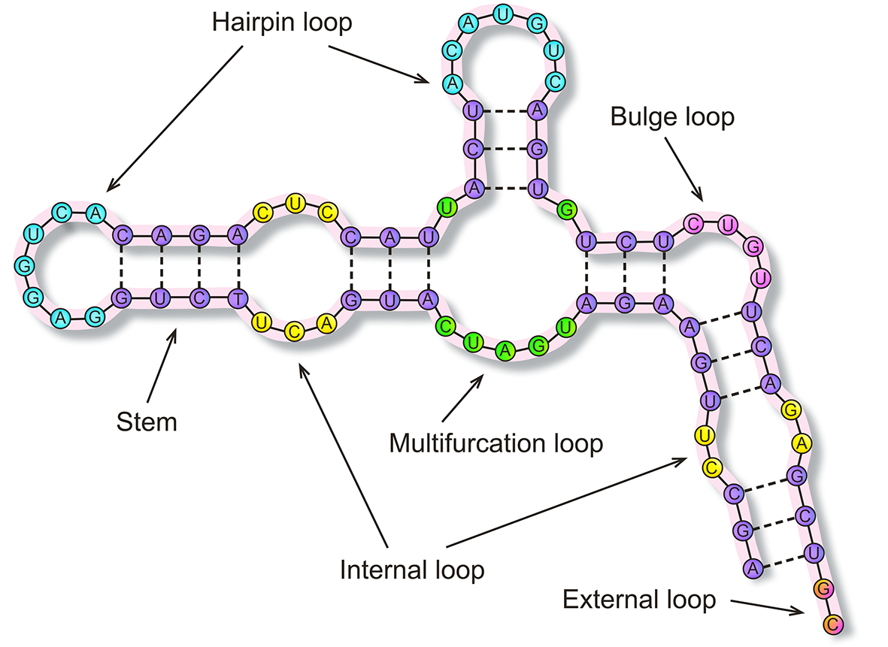

Software & Tools
The lab develops freely available bioinformatics software for the research community. Source code is hosted on GitHub.

A computational tool for detecting clusters of somatic mutations in complete genomes. Analyzes VCF files to identify mutational hotspots with configurable statistical thresholds; supports SNVs, indels, or both.
GitHub
Generates realistic somatic mutations for mutagens such as APOBEC and UV radiation, sampling across genomic features including replication timing, gene/intergenic regions, and transcription/replication strand.
GitHub
A Python package for analyzing RNA secondary structure elements in viral genomes. Converts between structure formats (dot-bracket, CT, WUSS), classifies nucleotides into structural categories (stems, loops, bulges, etc.), and produces statistical summaries of element frequency and size distributions.
GitHub Reference paperCalculates proteolytic susceptibility scores using position-weighted matrices (PWMs) for 169 proteases from the MEROPS database. Takes protein sequences in FASTA format and outputs per-position PWM scores.
GitHub Reference paperEstimates the susceptibility of protein regions to proteolytic cleavage based on 3D structure. Supports both experimental PDB structures and AlphaFold models. Assigns a 0–1 susceptibility score to each peptide bond and generates color-mapped 3D visualizations.
GitHub Reference paper